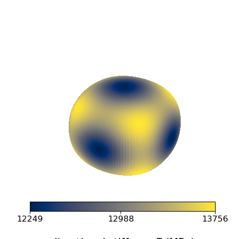

Note
Go to the end to download the full example code.
Homogenized elastic stiffness of periodic unit cells
This example computes the effective (homogenized) elastic stiffness matrix
\(\mathbf{L}^{\text{eff}}\) of periodic lattice unit cells with
fedoo.homogen.get_homogenized_stiffness(). The function applies periodic
boundary conditions and solves six elementary load cases (one per component of
the mean strain).
Two unit cells are considered:
an octet truss (small mesh read from a gmsh
.mshfile), for which the effective stiffness matrix is simply printed;a gyroid (periodic mesh generated with microgen), whose anisotropy is illustrated by the directional Young’s modulus \(E(\mathbf{n})\).
import fedoo as fd
import numpy as np
import matplotlib.pyplot as plt
from matplotlib import cm, colors
dir_meshes = "../../util/meshes/"
np.set_printoptions(precision=3, suppress=True)
Octet truss unit cell
The .msh file contains several element types: only the tet4 volume
mesh is kept. meshperio=True states that the mesh is periodic (the nodes
of opposite faces match), which is required for the periodic boundary
conditions.
fd.ModelingSpace("3D")
mesh_octet = fd.mesh.import_file(dir_meshes + "octet_truss.msh")["tet4"]
material = fd.constitutivelaw.ElasticIsotrop(1e5, 0.3) # E (MPa), nu
wf = fd.weakform.StressEquilibrium(material)
assembly_octet = fd.Assembly.create(wf, mesh_octet)
L_eff_octet = fd.homogen.get_homogenized_stiffness(assembly_octet, meshperio=True)
Warning : Elements type 15 is not implemeted!
The effective stiffness is given in the Voigt notation of fedoo, with the
component order [11, 22, 33, 12, 13, 23] and engineering shear strains.
The octet truss has a cubic symmetry, so only three independent constants
appear (\(L_{11}\), \(L_{12}\) and \(L_{44}\)).
For an isotropic cell, the equivalent Young’s modulus and Poisson ratio could
be extracted with simcoon:
from simcoon import simmit as sim; sim.L_iso_props(L_eff).
print("L_eff (octet truss) =\n", L_eff_octet)
L_eff (octet truss) =
[[7486.297 3101.783 3110.239 19.817 -33.036 0.649]
[3101.783 7480.106 3100.177 26.068 2.113 16.252]
[3110.239 3100.177 7462.749 -0.751 -26.332 19.333]
[ 19.817 26.068 -0.751 3139.361 0.971 -0.639]
[ -33.036 2.113 -26.332 0.971 3147.532 3.26 ]
[ 0.649 16.252 19.333 -0.639 3.26 3148.362]]
Gyroid unit cell
Same procedure on a periodic gyroid mesh.
mesh_gyroid = fd.Mesh.read(dir_meshes + "gyroid_per_clean.vtk")
assembly_gyroid = fd.Assembly.create(wf, mesh_gyroid)
L_eff = fd.homogen.get_homogenized_stiffness(assembly_gyroid, meshperio=True)
print("L_eff (gyroid) =\n", L_eff)
WARNING: delete old "_perturbation" problem that is related to another mesh or rigid body constraint
L_eff (gyroid) =
[[16625.065 7223.75 7223.898 2.528 9.653 -3.876]
[ 7223.75 16629.488 7218.697 18.301 -0.796 -4.209]
[ 7223.898 7218.697 16628.438 2.943 -1.94 11.442]
[ 2.528 18.301 2.943 5373.2 -3.045 -0.493]
[ 9.653 -0.796 -1.94 -3.045 5374.723 2.315]
[ -3.876 -4.209 11.442 -0.493 2.315 5372.658]]
Directional Young’s modulus
For a uniaxial stress along the unit direction \(\mathbf{n}\), the apparent Young’s modulus is
In fedoo’s Voigt notation (engineering shear strains), the uniaxial stress \(\mathbf{n} \otimes \mathbf{n}\) is the vector \([n_1^2, n_2^2, n_3^2, n_1 n_2, n_1 n_3, n_2 n_3]\). The surface \(E(\mathbf{n})\,\mathbf{n}\) is plotted below.
phi = np.linspace(0, 2 * np.pi, 128) # azimuthal angle in the xy-plane
theta = np.linspace(0, np.pi, 128).reshape(128, 1) # polar angle
n_1 = np.sin(theta) * np.cos(phi)
n_2 = np.sin(theta) * np.sin(phi)
n_3 = np.cos(theta) * np.ones(128)
n = (
np.array([n_1 * n_1, n_2 * n_2, n_3 * n_3, n_1 * n_2, n_1 * n_3, n_2 * n_3])
.transpose(1, 2, 0)
.reshape(128, 128, 1, 6)
)
S_eff = np.linalg.inv(L_eff)
E = 1.0 / (n @ S_eff @ n.reshape(128, 128, 6, 1)).reshape(128, 128)
x = E * n_1
y = E * n_2
z = E * n_3
fig = plt.figure(figsize=plt.figaspect(1))
ax = fig.add_subplot(111, projection="3d")
ax.set_axis_off()
Emin, Eavg, Emax = np.min(E), np.average(E), np.max(E)
norm = colors.Normalize(vmin=Emin, vmax=Emax, clip=False)
ax.plot_surface(
x,
y,
z,
rstride=1,
cstride=1,
norm=norm,
facecolors=cm.cividis(norm(E)),
linewidth=0,
antialiased=False,
shade=False,
)
scalarmap = cm.ScalarMappable(cmap=plt.cm.cividis, norm=norm)
cbar = plt.colorbar(
scalarmap,
orientation="horizontal",
fraction=0.06,
pad=-0.1,
ticks=[Emin, Eavg, Emax],
ax=ax,
)
cbar.ax.tick_params(labelsize="large")
cbar.set_label(r"directional stiffness $E$ (MPa)", size=15, labelpad=20)
ax.azim = 30
ax.elev = 30
plt.show()

Total running time of the script: (0 minutes 5.205 seconds)